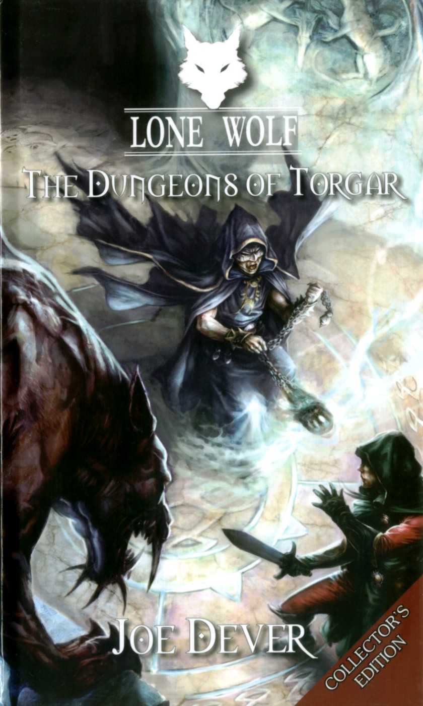
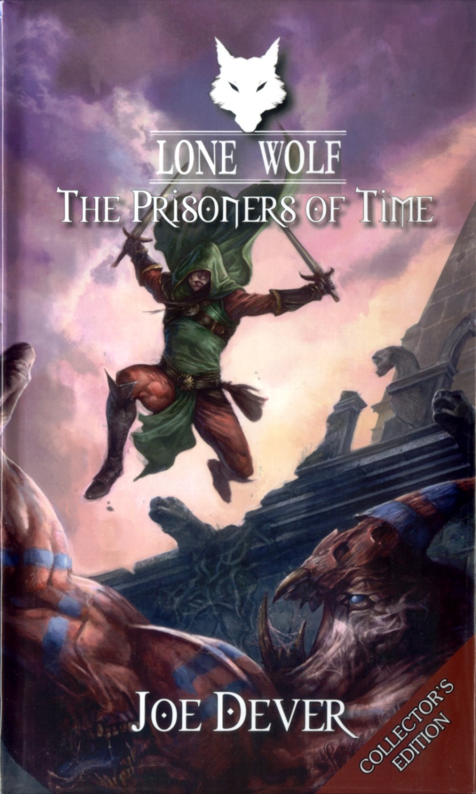
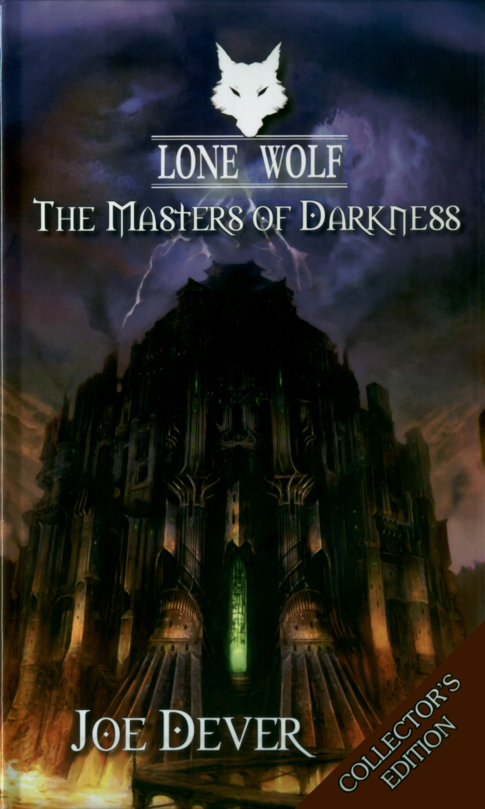

Reading
6. The Kingdoms of Terror
Section 219 · current book
Your campaign library
Books describe their real play state, while your current campaign always has one clear next step.
Section 219 · 63% of the current test route
Magnakai Series
Section 219 · current book

Campaign handoff ready

Available after Book 7

Installed

Installed

Installed

Installed